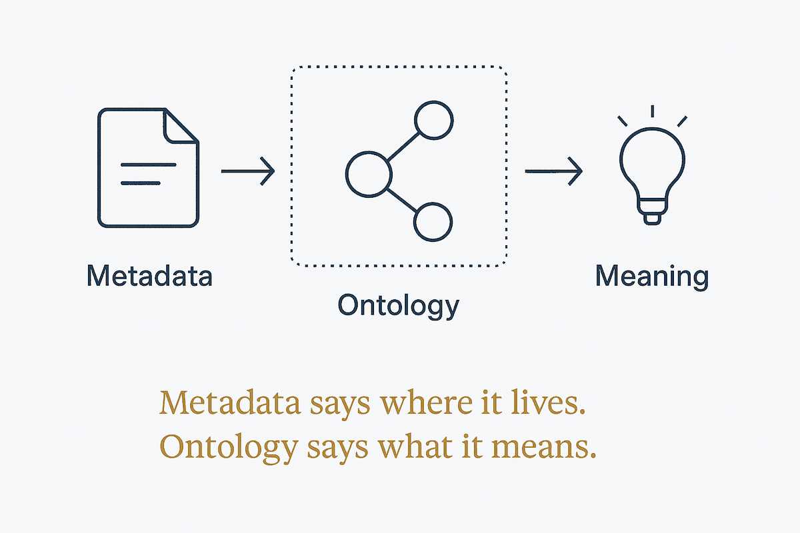

A catalogue tells you the table exists and who owns it. It cannot tell you what the word means. Two layers, two failure modes, and you need both.

These get sold as the same purchase and they answer different questions. Metadata is locational: which table, which source, who owns it, when it last refreshed, whether it can be trusted. Ontology is semantic: what this concept means, how it relates to others, what rules constrain it. One helps you find data. The other helps you understand it.
The two failure modes are worth naming because both are common and neither is obvious from inside. Metadata without ontology gives you a beautifully catalogued warehouse in which customer is defined four different ways across four domains — everything is findable, nothing agrees, and reports that should reconcile don't. Ontology without metadata gives you an elegant conceptual model connected to nothing: philosophically sound, operationally inert, mapped to no actual column in any actual system.
The reason this matters more now is that agents consume both. Retrieval needs the locational layer to know where to look and whether the source is fresh enough to trust. Reasoning needs the semantic layer to know what the retrieved thing is and what may validly be concluded from it. Give an agent only the catalogue and it fetches confidently from sources whose meanings conflict. Give it only the ontology and it has definitions for things it cannot reach.
The practical test is a question with two halves: can I find it, and do we agree what it means? A system that answers only the first is a search index with governance paperwork. A system that answers only the second is a diagram. Most organisations have invested in one, called it the data programme, and are confused about why the AI still gets things wrong.